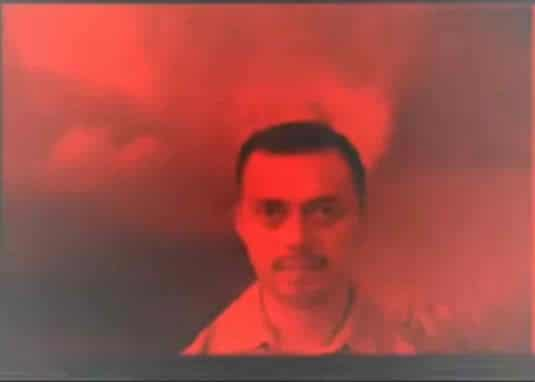
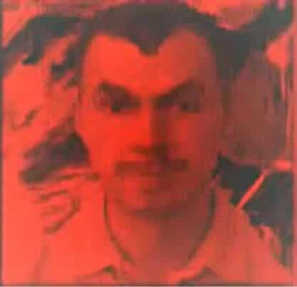

Mereana Mordegard Glesgorv is an old creepypasta originating from a youtube video created by YouTube user erwilzei in April, 2008. However the original video uploaded by erwilzei is virtually impossible to find as many versions of the video have been uploaded and the video and or the account was terminated by YouTube staff.
The video for Mereana Mordegard Glesgorv shows a man in a dark red background staring at the camera with a blank expression while a high pitched ringing sound can be heard periodically...

Towards the end of the video, the scene shifts with the man giving an odd expression to the camera with his eyebrows tilted upwards...

Shortly after the 20 second video was published, an extended two minute version of Mereana Mordegard Glesgorv was uploaded by youtube user cagalhaodemerda on April 20, 2008. The video itself came with the same man in the same red background, at 1:06 (or 96 seconds) the same high pitched ringing sound can be heard until the end of the video, and at the few seconds before the video ends, the same close up of the man's face can be seen. However the extended video included a description of the video reading...
Cagalhaodemerda's videoThe description gave a claim to why the original, supposed, 2 minute video of Mereana Mordegard Glesgorv was taken down by YouTube. It stated that after the full video was uploaded, 153 people had gouged their eyes out and sent them to Youtube's main office in San Bruno and some had even committed suicide. The individuals also had cryptic markings on their hands which were never deciphered.
The video also claimed that YouTube was the one who kept/uploaded the 20 second video from earlier in order to discourage viewers to go search for the actual video and that one YouTube staff member viewed the video and started screaming 45 seconds into the video and had to be under constant sedation after the viewing.
After the full video was released, multiple theories surrounding Mereana Mordegard Glesgorv emerged.
One of the theories of Mereana Mordegard Glesgorv was that the video itself was created by the United States Secret Service.
Another theory for the creepypasta was that anyone who watched the video was cursed with misfortune.
Another theory of Mereana Mordegard Glesgorv was that the creator was the one who killed the 153 people who gouged their eyes out as a warning to YouTube.
However as the creepypasta grew and eventually found itself in the Russian web, in a YouTube video taken down by its staff for violating its terms of service, it had proposed one particular theory stated that the entire creepypasta, story and video was a hoax. It claimed that the video was made by an eBaumsworld user using photographs for a marketing coordinator in an LA advertising agency. The person seen in the creepypasta video was later identified as Byron Cortez, a U.S. Virgin Islands citizen.
Aside from the confirmed theories of Mereana Mordegard Glesgorv, there are additional reasons why the video can be considered a hoax. One of the reasons why is that due to the severity of the actions caused by the video, it's guaranteed that the authorities would've gotten involved which didn't happen. Another reason was that YouTube would've been much more strict on the videos relating to the creepypasta.